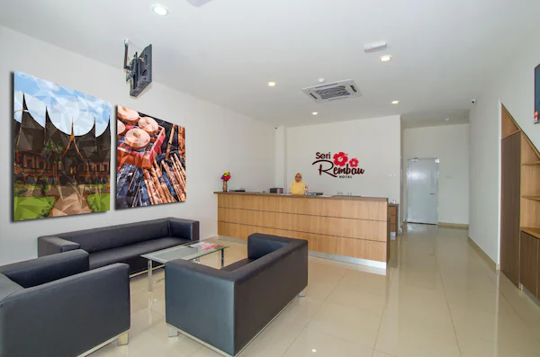
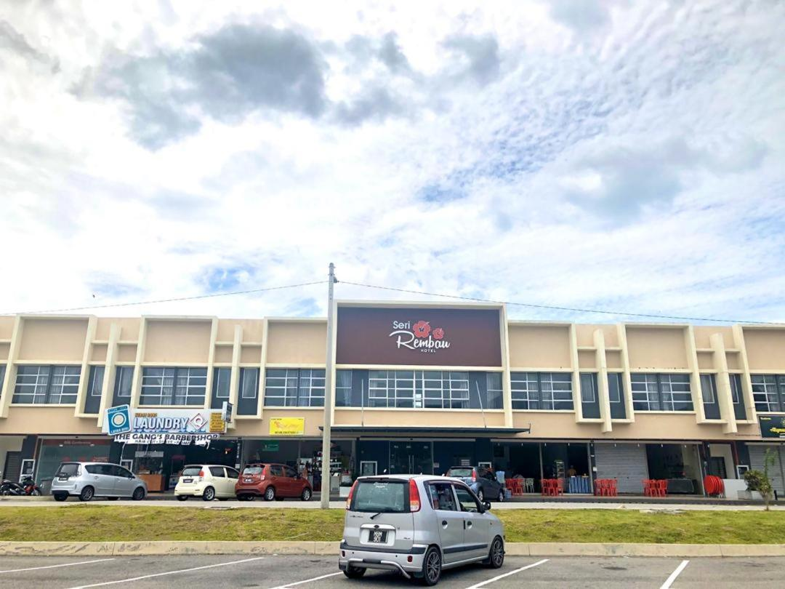
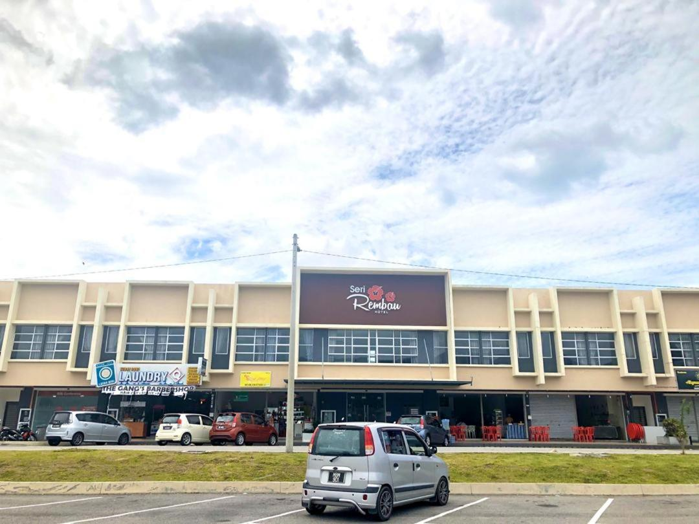
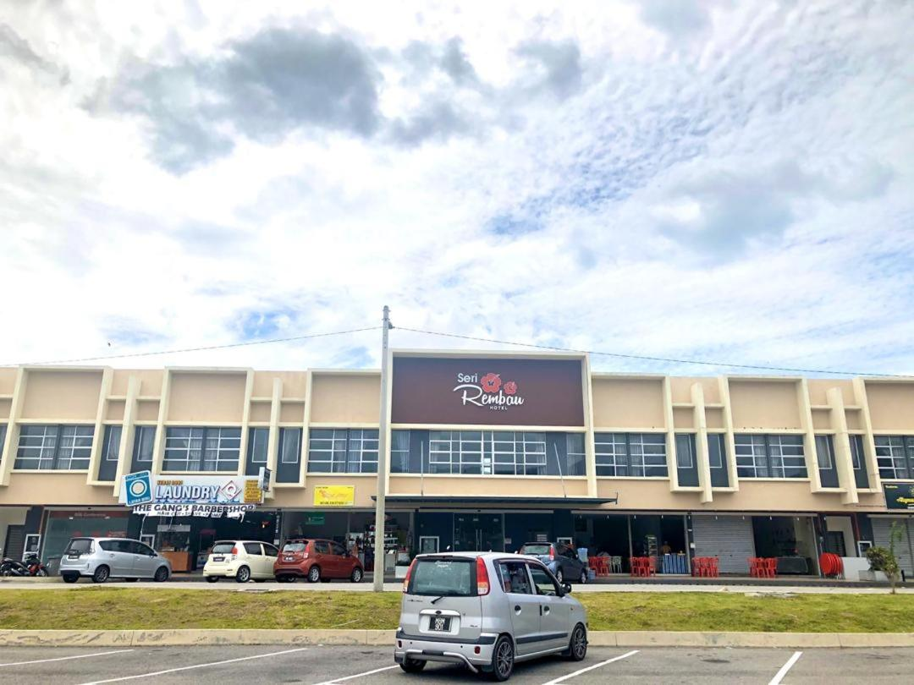
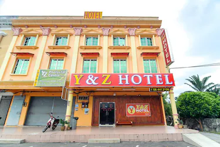
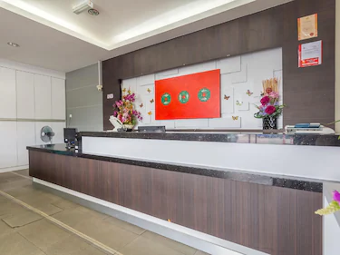
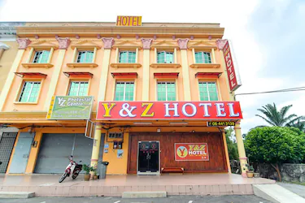
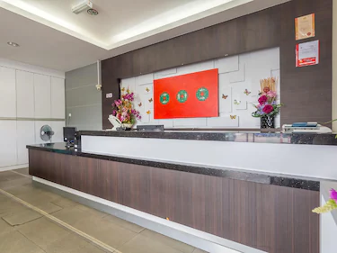
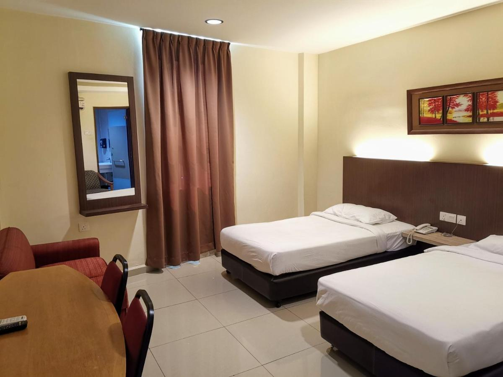

More about Gunung Datuk Recreational Forest
1. Location
2. Video
3. Hotels

 


Seri Rembau Hotel
Get your trip off to a great start with a stay at this property, which offers free Wi-Fi in
all
rooms. Conveniently situated in the Rembau part of Rembau, this property puts you close to
attractions and interesting dining options. As an added bonus, restaurant is provided
on-site to
conveniently serve your needs.
 



Y&Z Hotel
Get your trip off to a great start with a stay at this property, which offers free Wi-Fi in
all
rooms. Conveniently situated in the Tampin part of Tampin, this property puts you close to
attractions and interesting dining options. This 3-star property is packed with in-house
facilities to improve the quality and joy of your stay.

GHotel Centre Point
The car parking and the Wi-Fi are always free, so you can stay in touch and come and go as
you
please. Conveniently situated in the Tampin part of Tampin, this property puts you close to
attractions and interesting dining options. This 3-star property is packed with in-house
facilities to improve the quality and joy of your stay.